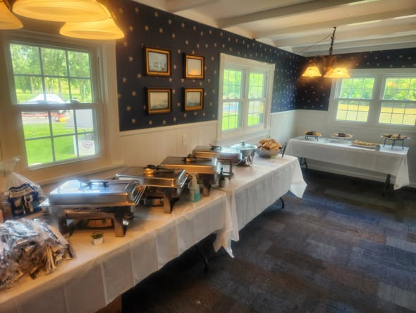

Local business · Web design · 2026
A conversion-focused website for an owner-operated catering and events brand in Fremont, Ohio — built to earn phone calls, showcase real work, and rank locally without framework overhead.

Live · Custom domain · SEO-readyThe challenge
Chef Zach Beckman runs 419 Venue Guy — banquet catering, food truck nights, backyard hibachi, photobooth rentals, and in-home chef experiences across northwest Ohio's 419 area. His reputation is built on personal service and real events, but he had no dedicated web presence that pulled it together: menu pricing, trust signals, press coverage, and a clear path to call now.
The site had to feel premium without feeling corporate. Fast on mobile. Easy for Zach to understand. And structured so Google, Facebook, and iMessage previews all represented the brand correctly.
Drive phone calls and messages — not online checkout. Showcase breadth of services in one scroll.
No CMS budget, no booking engine, no dev team. Real photos only. Owner-approved copy and pricing.
5-star Google reviews, WTOL 11 TV feature, The News-Messenger press, 3K+ Facebook following.
The approach
Instead of a framework stack, we chose a single static HTML page with a custom design system — faster to iterate, cheaper to host, and impossible to "break" with dependency updates. Every section maps to a real business question a customer asks before calling.
Warm cream palette, Fraunces serif headlines, amber CTAs — mirrors the hospitality of the events themselves.
Sticky call bar, tap-to-expand service cards, tabbed menu, photobooth price picker — thumb-friendly throughout.
Reviews, press, TV embed, and a 13-image gallery from real events — proof before the ask.
The solution
Hero collage, six service cards, gallery, contact paths, custom color system, mobile sticky CTA.
Tabbed menu with per-person pricing across appetizers, mains, bars, and desserts — plus a 3-page PDF for email quotes.
Repositioned copy around banquet catering and food truck nights. Press section, WTOL embed, mobile overflow fixes, lighter animations.
Full technical SEO layer, JSON-LD schema, custom domain 419venueguy.com, 301 redirect from Vercel alias, branded social preview image.
Vercel Web Analytics for visitor tracking, Speed Insights for Core Web Vitals — real-user data from day one forward.
"We specialize in smiles!"
Results & deliverables
The site launched on a custom domain with dual-host redundancy (Vercel + GitHub Pages), a preview-gated update workflow for safe future edits, and a complete SEO foundation — without a single npm dependency in production.
419venueguy.com — canonical domain with social preview branding and structured data for local search.
tel: links, email, Facebook, mobile sticky CTA, menu PDF download — every path leads to a human conversation.
46-commit Git history, instant Vercel rollback, GitHub Pages mirror. Client site survives platform outages.
Tech stack
Scroll the full site — menu tabs, service cards, WTOL feature, reviews, and gallery — at the link below.
Open 419venueguy.com →